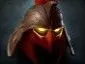

Hoof Stomp
наносит урон и оглушает врагов вокруг.

Хардлайн — позиция 3
принимать урон, оглушать врагов, начинать драки и помогать команде быстро перемещаться по карте.
используй Double Edge для зачистки крипов, но следи за собственным здоровьем.
наносит урон и оглушает врагов вокруг.
наносит большой урон цели и самому Кентавру.
позволяет отвечать уроном на атаки противников.
даёт союзникам возможность быстро двигаться по карте и проходить сквозь врагов, помогая начать бой или отступить.
